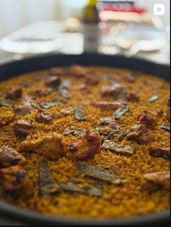

—
—
4 personas
Paso 1 de 8

Mide cuánta agua evapora tu equipo activo por minuto para sumarla automáticamente al cálculo de agua de cada receta.
Cómo hacerlo: llena la paella con agua (ej. 3 litros), pon el fuego a tope y pulsa iniciar. El cronómetro contará 15 minutos hacia atrás. Mantén la pantalla encendida.
Coloca el móvil sobre la paella. Pulsa Establecer punto 0 para calibrar la posición de referencia de tu superficie.
Pon el móvil en una superficie plana. Coloca el objeto sobre la zona de pesado y mantén la presión.
Aprende a sacarle el máximo partido a cada función de la app.